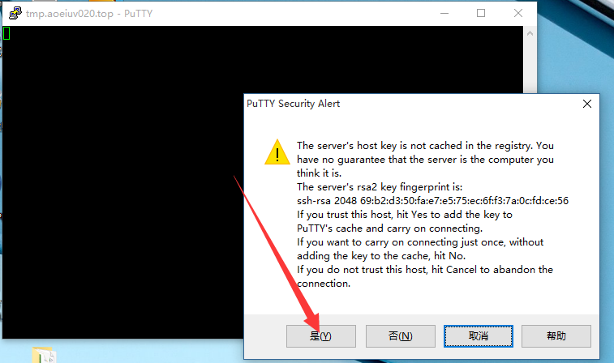

SSH，Windows下利用软件Putty，通过SSH远程控制Linux。

一看就知道，这东西很强大很复杂，事实上SSH也确实不只是简单的远程登陆，但这里只演示最基本的功能，ssh远程登陆。

远程控制首先要有个服务器去控制，这里贡献上我们几个人的vps，
| 地址 | 账户 | 密码 |
|---|---|---|
| 121.42.211.141 | student | student |
| Sachin | Mumbai |
同学们可以随便搞，搞坏了我重装就是， 输入地址点了open然后就是账号密码了，但是第一次可能会有个对话框，点是就行了，这是记录地址对应的主机的，SSH为了安全 需要记录了这个，如果地址对应的主机变了，就不让连了。


成功登陆的同学就有了个Linux用了，这样后面的学习可以边学边尝试，才有意义，至于具体的命令，后面也有讲，但不是现在，现在可以随便看几个命令，随便输入看看，ls,echo,cd,cp,mv,rm,cat,clear。

几乎所有命令都能在man(menual手册)查到详细介绍。

建议可以自己买个vps，linux环境的，比如阿里云的有学生优惠，9.9元/月，还有腾讯云的，1元/月，只要等学校要求在学信网注册后，就可以买了，其他都好贵。